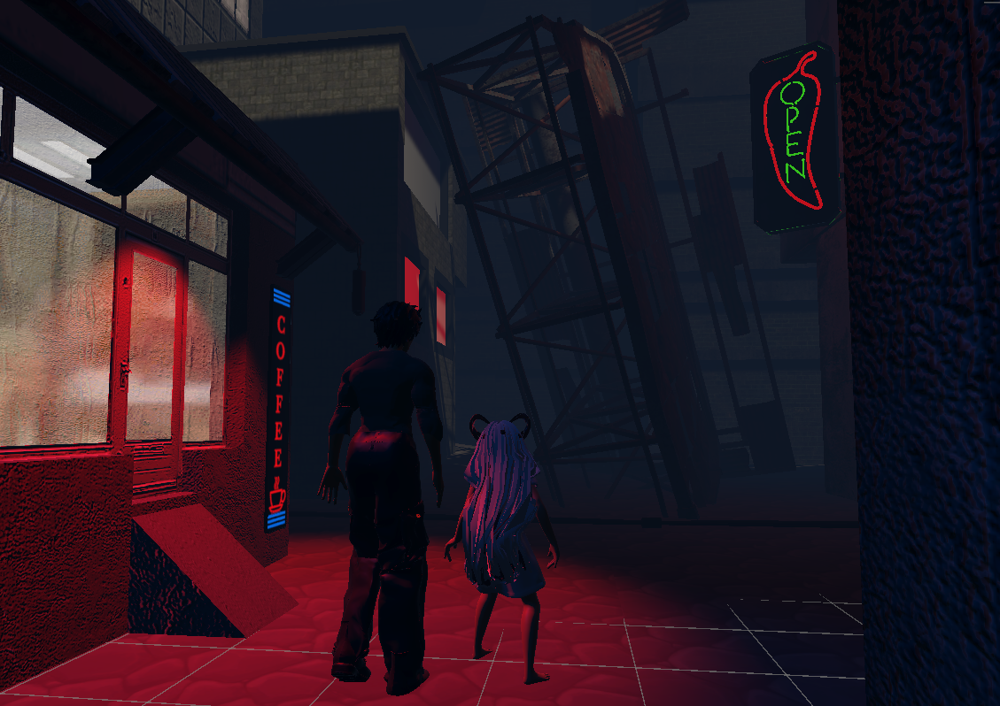
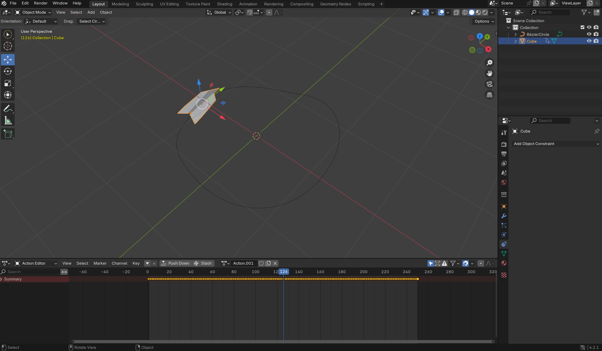
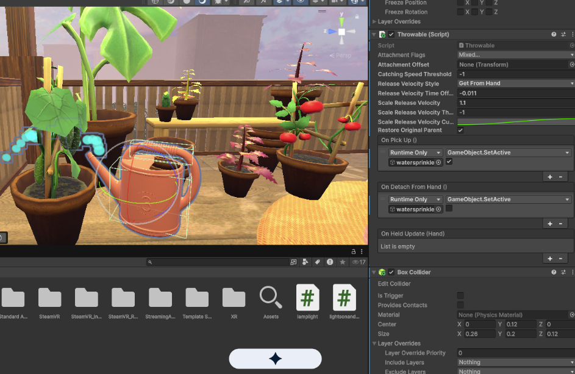

No Graves For Monsters
An investigation of how different narrative storytelling strategies can enhance player experience

Project Overview
A consistent growth in story-driven media has exposed the desire for connectivity, authenticity and valuable emotional experiences. Story-led gameplay has increased in popularity in recent years, enhanced by modern technologies capabilities of transforming how we engage in narrative. This project aims to learn from the existing literature on narrative design for video games and shift focus to how players are responding to these design choices. Separated into four main stages, my project held the following structure: Exploring literature, conducting initial user research, project design and development and conclusive user research and evaluation.
The Technical Challenges & Solutions
Hurdle 1: Learning new tools for 3D animation workflows
The Problem: On export to Unity, the Blender Rigify rig intitially used to rig/animate the characters was incompatible with Unity and caused issues with recognising the head and spine's structure resulting in multiple errors.
The Solution: Forced to pair the Mixamo rig directly to the character model in Blender and retarget each animation using the Rokoko plugin. The simplicity of the Mixamo rig allowed it to be easily recognised by Unity.
Hurdle 2: Spatial storytelling for 'freely' led gameplay in a linear environment
The Problem: Forcing the player down obvious paths to progess through the story direclty contrasted with the player's desires highlighted in the early focus groups. However, the game required linearity in it's narrative due to the short development time available.
The Solution: Used subtle guidance through audio queues and lighting to represent the suggested path for the player without restricting access to less relevant areas of the map, striking a balance between a guided linear path and player authority over their own experience.
Asset Development Gallery
Swipe through the project assets. Hover over any card to reveal the technical logic, implementation details, and project necessity.

Fig 1. Paper plane geometry creation in Blender.

Fig 2. C# script architecture for plane instantiation.

Fig 3. Custom texture for fluid particle systems.
UX Research, Methodology & Development Process
The user research utilized a three-phase, user-centered approach to evaluate the impact of game narrative on player engagement. Qualitative focus groups established the initial player expectations and design requirements for the game. These insights directly shaped the development of a custom prototype, which was subsequently validated through user testing and UX evaluative studies to measure actual player immersion, autonomy, and emotional investment.
1. Initial Literature Review and Focus Group Evaluation
Conducted initial qualitative focus groups to isolate specific narrative techniques and mechanics that maximize player engagement and emotional investment. Focus group questions were formed by taking knowledge from existing literature exploring narrative impact and structure in digital media.
2. Informed Development
Translated these research insights into design requirements, developing a custom game prototype that directly embedded the focus groups' desired narrative strategies.
3. Evaluative UX testing
Executed hands-on user testing and evaluative UX studies on the developed prototype to measure actual player immersion, autonomy, and engagement metrics. Focus was brought back to the 'emotional engagement' of the player, a concept defined and frequently explored throughout the project.
Reflection & Further Development
An honest evaluation reveals the technical hurdles and design limits of the current prototype alongside a roadmap to fully realize my project aims.
The Reality Check: While eliminating 2D HUD menus kept the user visually immersed, relying purely on physics-based spatial interfaces introduced unintended physical friction; without subtle tactile resistance, menus feel "floaty" and less predictable.
Further Development: Implement variable haptic feedback loops mapped directly to physics actions. Generating a distinct "snap" sensation in the controllers when a player's hand intersects a spatial UI element provides the missing tactile confirmation required for reliable interaction.
The Reality Check: User testing proved that reducing cognitive load goes beyond omitting tutorials. First-time VR users still faced a split-second of confusion trying to swipe certain items before realizing they needed to grab them.
Further Development: Perform a systematic overhaul of asset visual affordances across the entire sandbox, using highly pronounced handles and contextual shader glows that instantly signal how an object is manipulated to drive task-completion speeds even higher.
The Reality Check: The sandbox successfully encourages standard real-life actions (like watering plants or waving sparklers), but the loop feels static because the environment doesn't meaningfully react back to the user over time.
Further Development: Introduce persistent environmental states. Watering plants should trigger an active script collider that dynamically scales up the asset's geometry over time, turning temporary particle loops into living feedback systems.